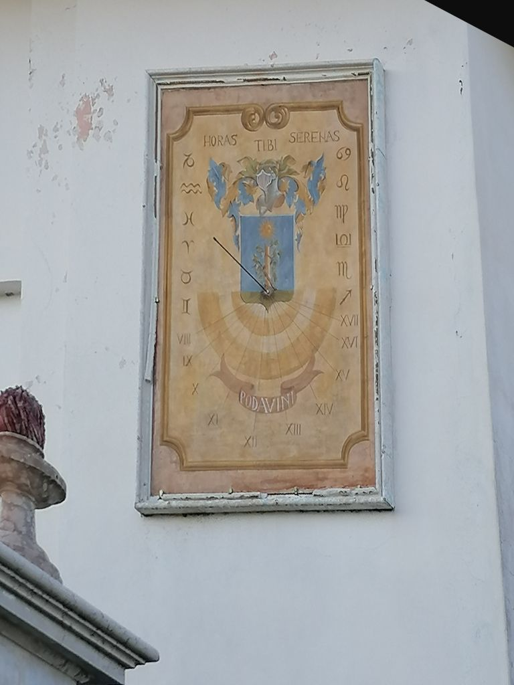

Meridiana© 2026 Sebb71Località: Morsone“Horas Tibi Serenas (Le ore ti siano serene)”Anno fotografia: 2021Proprietà: Privata — la posizione esatta non è pubblicataNote: È visibile anche l'iscrizione Podavini sul cartiglio inferiore.